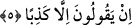
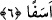

“Ve” yine özellikle “Allah evlâd edindi diyenleri” yahûdileri, hristiyanları ve kâfir
Araplardan Müdlic oğulları gibilerini “de uyarmak için.”
5. Ne onların (Allah evlât edindi, diyenlerin), ne de atalarının bu konuda hiçbir
bilgisi yoktur. Ağızlarından çıkan bu söz ne büyük oldu! Yalandan başka bir şey
söylemiyorlar.
“Ne onların (Allah evlâd edindi, diyenlerin), ne de” taklid ettikleri “atalarının bu
konuda” Yâni Allah’ın evlâd edindiği husûsunda “hiçbir bilgisi yoktur.” İlim,
imkansız oluşuna binâen Allah’ın evlâd edinmesini uygun bulmaz. Ancak bunu, Allah
hakkında câiz olan şeyleri düşünüp tefekkür etmeden câhilliklerinden ötürü söylüyorlar.
“Ağızlarından çıkan bu söz ne büyük oldu!” Ağızlarından çıkan hava olduğu halde,
onun merâmı ifâdeye vesile olan ses kalıplarına bürünmesi sebebiyle burada “el-hurûc
(çıkmak)”, “söz kelime”e isnad edilmiştir.
Kadı Beyzâvî şöyle der: “Allah’ı başkalarına benzettikleri, O’na ortak koştukları,
O’nun kendisine yardım eden ve halef olan bir çocuğa ihtiyaç duyduğu vehminde
bulunmaları ve diğer sapkınlıkları sebebiyle küfrü gerektiren bu sözleri ne büyük, ne
kadar pervâsızcadır.”
et-Te’vîlât’ta şöyle der: “Onların küfür ve yalan olarak söyledikleri Allah katında
büyük oldu. Bu, günahların en büyüğüdür. Çünkü bu sözü Allah’a nisbet ettiler, O’na
yalan iftirâda bulundular ve O’nu yalanladılar.”
“Yalandan başka bir şey söylemiyorlar.” Onların bu konuda (Allah’ın çocuk
edindiğine dair) söyledikleri, doğru olması imkansız olan yalan sözlerden başka bir şey
değildir.
6. Bu yeni Kitab’a inanmazlarsa (ve bu yüzden helâk olurlarsa) arkalarından
üzüntüyle neredeyse kendini harap edeceksin.
“Bu yeni Kitab’a” Kur’ân’a “inanmazlarsa (ve bu yüzden helâk olurlarsa)
arkalarından üzüntüyle neredeyse kendini harap edeceksin!”
et-Te’vîlâtü’n-Necmiyye’de şöyle der: “Bu ifâde yasaklamak mânâsınadır. “Sen
nefsini helâk etme” demektir. Bu tıpkı ‘Sakın öyle yapma!’ anlamında “Herhalde sen
şöyle yapmak istiyorsun.” demektir. Ya da ‘ey Muhammed (a.s.) şimdi senin durumun